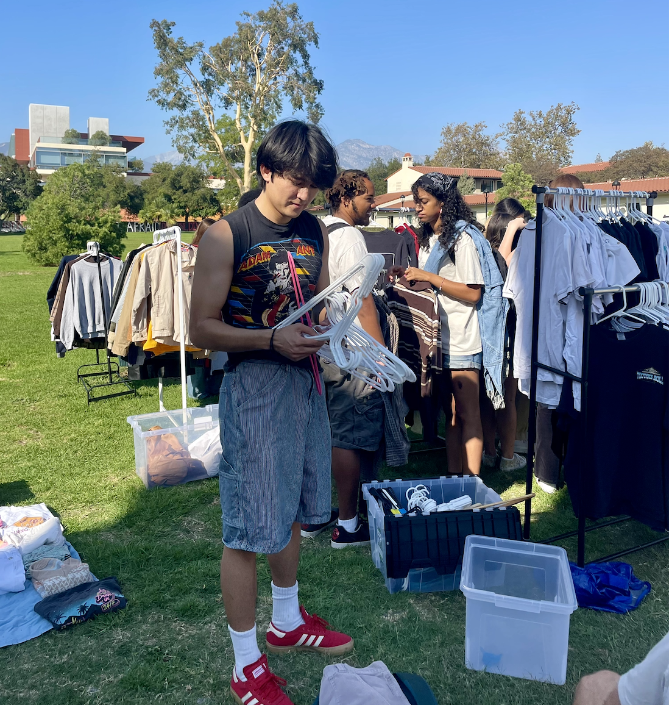
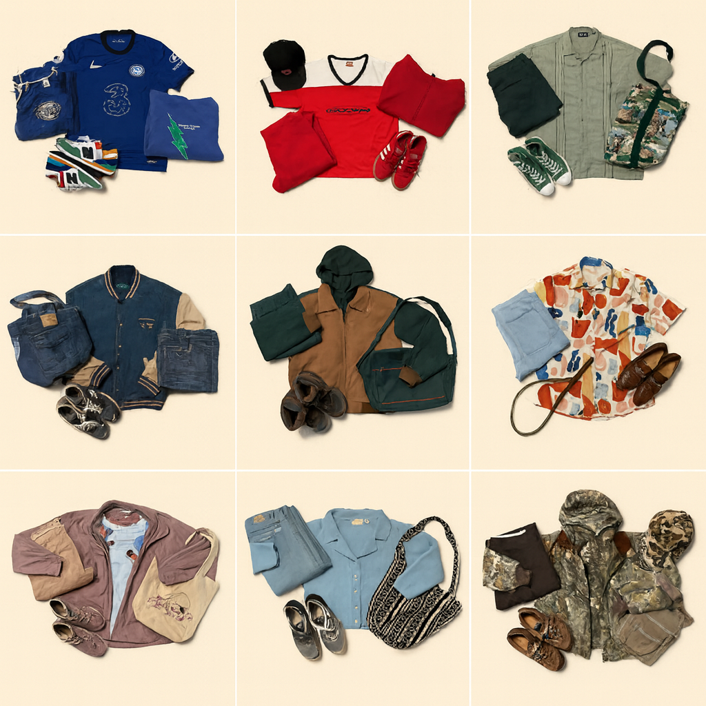

Hobbies
What I do when I'm not working. Video games and board games are big ones, but harder to document here.
Backpacking

Whenever I have a free couple of weeks and the budget, my favorite thing to do is explore a new country solo — just me and my backpack, picking up phrases, trying new food, and meeting people. About 100 days of solo travel across multiple countries so far. Favorite countries have been Morocco, Germany, and Albania, favorite city was Vienna, though Tokyo will always be home base.
Cocktails
Working through the classics right now. Starting with the fundamentals and building from there. Mojitos take forever but they're worth it.
Part-time Jobs

I've worked at a few restaurants and bars, but Gold Bar at Edition, a Marriott property in Tokyo, was by far the best. Great coworkers, interesting customers, and I got to learn hospitality and bartending from people who were genuinely excellent at it.
Thrifting

Thrift stores are my third space. I love hunting for vintage clothes on weekends and curating my closet. My clothes lifecycle goes: thrift for $1 at the bins, wear until I find something I like a bit more, sell the previous one at a flea market.
Fashion

I like putting together something interesting regardless of the occasion. Had a phase of documenting fits, so I put them here.